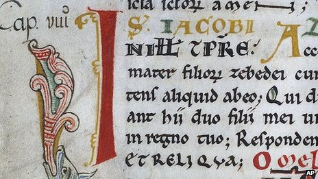

Nie pozostaną po nas nawet książki
W Hiszpanii szczęśliwie odnaleziono Codex Calixtinus, dwunastowieczny iluminowany manuskrypt, skradziony rok wcześniej z katedry w Santiago de Compostela. Spisany jako swego rodzaju przewodnik dla średniowiecznych pielgrzymów, podążających Szlakiem św. Jakuba, prócz wskazówek natury praktycznej zawiera również teksty sermonów oraz homilii.
Nie to jednak w całej historii nurtuje najbardziej. Rodzą się bowiem pytania ogólniejszego rodzaju. Dlaczego tak bardzo cenimy iluminowane manuskrypty? Z jakiego powodu niektóre stają się sławne i pożądane? W naszej cyfrowej epoce dysponujemy przecież techniką zdolną wyprodukować o niebo mniej skazitelne, wręcz doskonałe własne egzemplarze. Czy o ich wartości decyduje patyna czasu? Odręczne wykonanie? Niepowtarzalność kolorystyki?
A może przede wszystkim to, że zdołały przetrwać wieki? Stąd już tylko krok do zasadniczego pytania: co w takim razie my, współcześni, pozostawimy po sobie z dziedziny piśmiennictwa i ornamentyki? Skoro nie kultywujemy tradycji wytwarzania manuskryptów, po czym nas będą oceniać przyszłe pokolenia? Po miriadach nieskładnie zadrukowanych stronic? Terabajtach zer i jedynek, przechowywanych w czysto wirtualnej postaci „cyfrowych chmur”?
Zarzucając rękodzieło, tracimy nie tylko „rzeczy zwykłe, co z pokolenia na pokolenie żyją / w nas jako nasza własność, pod ręką, w spojrzeniu”. Okazuje się, że korzystając z cyfrowych urządzeń dokumentujemy jedynie wersje ostateczne naszych tekstów, wypowiedzi, projektów, nie pozostawiając potomnym możliwości podejrzenia twórczego procesu. Bezpowrotnie pozbywamy się skreśleń, poprawek, redakcji, wersji pierwotnych, które w przypadku dawniejszych autorów stanowią — nie tylko dla filologów — materiał nie mniej fascynujący niż ukończone dzieło.
Powrót do zamierzchłych technik? Rozbrat z nowoczesnością? Bynajmniej. Warto jednak zostawić po sobie coś namacalnie trwałego.
Fragment „Dziewiątej elegii duinejskiej” Rilkego w przekładzie M. Jastruna.